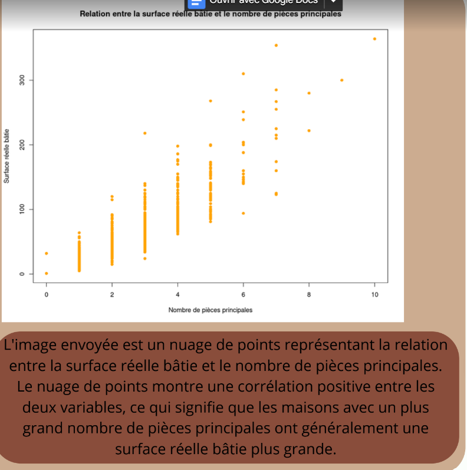

L’analyse descriptive consiste à résumer et visualiser les données afin d’en comprendre les principales caractéristiques. Elle permet de détecter des tendances, des écarts, des valeurs atypiques, ou encore d’observer des relations entre les variables (comme la surface ou le prix d’un bien immobilier). À l’aide du logiciel RStudio, j’ai réalisé plusieurs graphiques montrant la distribution des valeurs foncières dans deux zones géographiques : le 16e arrondissement de Paris et la ville d’Avignon.
Ce projet, mené à la fin du premier semestre, a mobilisé une grande partie des compétences acquises en statistiques, en visualisation de données, en nettoyage de données, et en interprétation des résultats.
Ce graphique compare les valeurs foncières dans les deux villes : les trois premières barres représentent les données du 16e arrondissement de Paris. On remarque immédiatement un écart important entre les deux zones, à tel point que les valeurs d’Avignon sont quasiment invisibles sur l’échelle choisie.
Ce second graphique met en relation la surface réelle bâtie et le nombre de pièces principales. En tenant compte du contexte socio-économique (niveau de vie, capital immobilier, urbanisme, etc.), nous avons interprété ces écarts comme étant liés à des réalités territoriales très différentes : le 16e arrondissement de Paris et la ville d’Avignon n’ont ni la même densité urbaine, ni la même valeur foncière, ni les mêmes habitudes de logement.
L’un des points faibles de notre analyse a été le choix des échelles sur certains graphiques, qui rendaient difficile la comparaison entre les deux villes. Nous aurions pu, par exemple, utiliser une échelle logarithmique ou créer des graphiques séparés pour mieux mettre en valeur les données d’Avignon. De plus, certaines variables importantes comme la date de vente ou le type de bien (appartement, maison) n'ont pas été prises en compte, ce qui limite la précision de notre interprétation.
Ce projet nous a appris qu’une analyse descriptive ne se limite pas à produire des graphiques : il faut aussi savoir adapter les visualisations à la structure des données et au public cible. Il est facile de biaiser l’interprétation sans s’en rendre compte si l’on ne critique pas ses propres choix de représentation. Nous avons donc pris conscience de l’importance de la rigueur dans le traitement des données et de la clarté dans leur présentation.